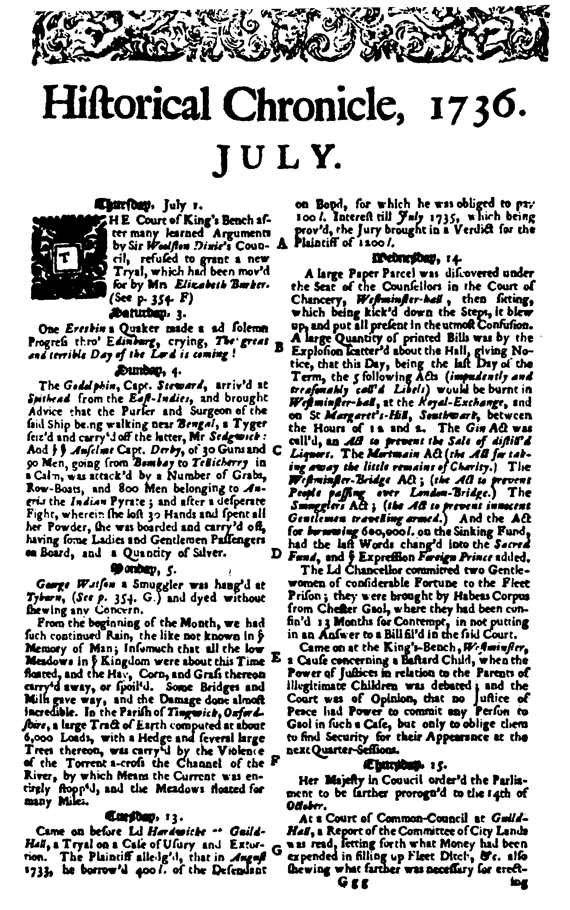
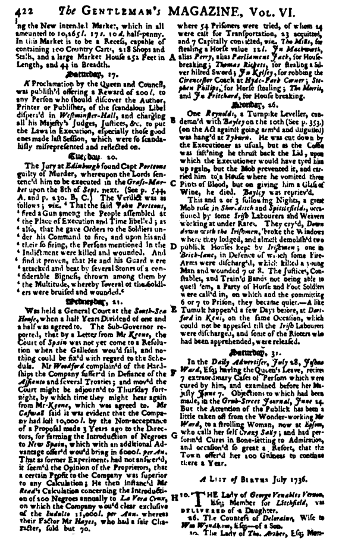

KUMRU grisi bir elbise giymiş olan adam, elinde bastonuyla, Lincoln’s Inn’in duvarları lambri kaplı bir odasının kapı eşiğinde ayakta durur. Kalın kaşları, burnunun bir yanında siğili ve biraz yapmacıklı gözüken heybetli bir duruşu vardır. Ceketinin içindeki hafif desenli yelek göbek bağlamaya başlamış olan karnını örtmektedir. Odanın bir bölümü hemen hemen tümüyle sınıflandırılmış dosyalar, kâğıt ruloları ve parşömenlerle kaplıdır; rafların önünde uzun bir yazı masası ve taburesi, bir tomar kâğıt ve yazı yazmaya yarayan gereçler bulunmaktadır. Tam karşıda, üzerinde Cicero’nun bir büstünün durduğu mermer bir şömine vardır, büstün çevresinde henüz yakılmamış gümüş şamdanlar durmaktadır. Şömine de daha yakılmamıştır. Odada bir ılıklık ve huzur havası vardır; yaprakları hâlâ yeşil olan bir sarmaşığın sardığı duvara bakan güney cephedeki pencerelerden içeri sabah güneşi girmektedir. Dışarlarda bir yerlerden, mevsimin ilk elmalarını satan bir kadının cılız ama melodik sesi gelmektedir. Ancak odada, tam bir sessizlik vardır.
Bayağı kısa boylu, narin, siyahlara bürünmüş, perukalı bir adam odanın uzak bir köşesinde bulunan yuvarlak bir masada oturmaktadır; okuduğu şeyden gözlerini kaldırıp bakmaz. Kapı eşiğinde duran adam çevresine şöyle bir bakınır ancak onu buraya getirmiş olan kişi ortadan esrarengiz bir biçimde kaybolmuştur. Adam, dikkati üzerine çekmek isteyen birinin edasıyla boğazını temizler. Sonunda masada oturan adam başını kaldırıp bakar. Belli ki kendisini görmeye gelen kişiden biraz daha yaşlıdır ama bedenen daha güçsüzdür, görünüşü bir Papa’nın ya da Voltaire’in cılız yapısını andırmaktadır. Kapıda duran adam, zarif bir nezaket jestiyle şapkasını çıkarır ve öne doğru hafifçe eğilir.
“Mr. Ayscough’la konuşma şerefine mi nail oluyorum, acaba? Ben Mr. Francis Lacy, emrinizdeyim, efendim.”
Çok gariptir ki, kısa boylu kanun adamı karşılığında hiçbir nezaket sözü söylemez, sadece kâğıtlarını masanın üstüne koyar ve onu daha da kısa gösteren yüksek arkalıklı koltuğuna biraz yaslanır; kollarını kavuşturur, sonra da avını gözleyen bir kızılgerdan kuşu gibi başını hafifçe sallar. Gri gözleri kendisini görmeye gelmiş olan kişiye yumuşaklıktan yoksun, sorgulayıcı bir bakışla bakar. Mr. Lacy bu karşılanma şekline biraz şaşmış gözükür. Yargıcın kendisinden istediği şeyi unuttuğunu, kendisini hemen tanıyamadığını düşünür ve yeniden konuşur:
“Oyuncu, efendim. Müvekkilinizin talebi üzerine görüşmeye geldim.”
Sonunda yargıç yeniden konuşur: “Oturun.”
“Müsaadenizle, efendim.”
Derken aktör kendine ‘ güvenini yeniden kazanmış olarak, masanın öteki yanındaki bir sandalyeye doğru ilerler. Ancak daha sandalyeye erişip oturmadan sıkıca kapatılan kapının gürültüsü dönüp arkasına bakmasına neden olur. Kargayı andıran bir balıkçıl kuşu gibi siyahlara bürünmüş, uzun boylu, suskun bir kâtip, sırtı kapıya dayanmış, koltuğunun altında yaprakları dörde katlanarak ciltlenmiş deri kaplı bir kitapla, ayakta durmaktadır. Bakışları efendisinin bakışları kadar keskindir ama belirgin biçimde daha alaycıdır. Lacy bir kez daha kısa boylu kanun adamına doğru döner ve beriki de önceki cümlesini yineler:
“Oturun.”
Lacy giysisinin eteklerini kaldırır ve oturur. Bir sessizlik olmuş ve kanun adamı hâlâ gözlerini aktörden ayırmamıştır. Kendini rahatsız hisseden aktör, elini yeleğinin cebine sokar ve oradan gümüş bir enfiye kutusu çıkarır. Kutuyu açar, sonra da karşısındakine uzatır.
“Siz de acaba alır mıydınız, efendim? En iyi Devizes tütünündendir.” Ayscough başıyla hayır anlamında bir işaret yapar. “O zaman, müsaadenizle... “
Lacy sol elinin sırtına iki tutam tütün koyup onları içine çeker, sonra enfiye kutusunu tok bir tak sesiyle kapatır, yeniden cebine koyar ve cebinden dantelalı bir mendil çıkarıp burun deliklerine dokundurur.
“Müvekkiliniz dramatik sanatlara coşkulu bir ilgi duyuyor ve benim tavsiyelerimi talep ediyor, öyle mi?”
“Evet, öyle.”
“O zaman iyi bir seçim yapmış, efendim. İnanın bunu alçakgönüllülükle söylüyorum. Uzun bir deneyimin bana getirdiği ustalığa pek az meslektaşım sahiptir, eleştirmenler bile bu vasıflarımı kabul ederek bana onur bağışlamışlardır.” Onaylandığını gösteren bir nezaket sözcüğü bekler ama bu sözcük gelmez. “Acaba müvekkilinizin esin tanrıçasının güleç Thalia mı yoksa oldukça ağırbaşlı Melpomene mi olduğunu sorabilir miyim?”
“Onun esin tanrıçası Terpsichore’dur.”
“Anlayamadım, efendim?”
“Dansın esin tanrıçası değil mi Terpsichore?”
“Ben dans hocası değilim, efendim. Korkarım bir yanlışlık yaptınız. Pandomim için dostum Mr. Rich’e başvurmalısınız.”
“Yanlışlık falan yaptığım yok.”
Lacy biraz doğrulur. “Ben bir aktörüm, efendim. Bu şehrin bütün cognoscenti’leri26 yeteneklerimden haberdardır.”
Kolları hâlâ kavuşuk duran kanun adamının yüzünde mizah duygusundan yoksun bir gülümseme belirir.
“Yakında Tyburn’ün bütün cognoscenti’leri de haberdar olacaklar. Müvekkilim sizin için bir piyes yazdı, dostum. Başlığı Basamaklar ve İp ya da Boşlukta Sallanıver. Bu piyeste siz, Cellat Jack Ketch’in ipinin ucunda, darağacı dansı yapacaksınız.”
Lacy’nin yüzünde bir an bir şok izi belirir, derken vücudunu dikleştirip bastonunun topuzuna sıkıca tutunur.
“Kötü bir şaka mı bu, efendim?’’
Kısa boylu kanun adamı, elleri masanın üzerinde, ayağa kalkar ve kurbanına doğru birazcık eğilir.
“Hiç de şaka değil... Mr. Brown. Tanrı şahidimdir ki şaka değil, seni gidi aşağılık herif.” _
Aktör, karşısındaki adamın ani sertliğine de, duyduklarına da inanamıyormuş gibi, onun ateşler saçan gözlerine bakakalır.
“Benim adım...”
“Dört ay önce, Devon ilçesinde, siz Mr. Brown olarak tanınıyordunuz. Bunu inkâr mı edeceksiniz?”
Aktör ansızın bakışlarını başka yöne çevirir.
“Yanılıyorsunuz efendim. Müsaadenizle, ben gidiyorum.”
Ayağa kalkar, arkasına döner ve kapıya doğru yürür. Orada hâlâ beklemekte olan ve şimdi yüzündeki alaycı gülümseme kaybolmuş kâtip, yerinden kımıldamaz. Sadece deri kabında oyulu bir haç figürü olan kitabı, iki eliyle yukarı doğru kaldırarak göğsüne dayar. Kanun adamının sesi daha da keskinleşir:
“Yakayı ele verdin, rezil herif!”
Lacy arkasına doğru bir bakış atar ve vücudunu dikleştirir.
“Yanıltıcı havalarınızla beni aldatacağınızı falan sanmayın. Sizin gibilerin ibreti âlem olsun diye halk önünde kırbaçlandıkları vakitler henüz çok gerilerde kalmadı. Size, bana komedi oynamaya kalkışmamanızı tavsiye ederim. Burası hukukun temsil edildiği bir oda. Sahte parıltılar taşıyan giysiler giyinip kuşanarak çalım satabileceğiniz ve palavralarınızla bir budalalar yığınını kendinize hayran edebileceğiniz bir tiyatro salonu değil. Bilmem, anlatabildim mi?’’
Aktör bir kez daha bakışlarını en yakın pencereye ve dışarıdaki yeşil yapraklara doğru çevirir, adeta onların arasında kaybolmayı istemektedir. Kısa bir sessizlik olur. Sonunda bakışlarını yeniden çevirip sorar:
“Size benimle bu tonda konuşma hakkını neyin verdiğini bilmek isterdim.”
Kanun adamı küçük elini ona doğru uzatır ve gözlerini gözlerinden ayırmadan, parmaklarıyla saymaya başlar:
“Bir; araştırıp öğrendim, söylediğiniz vakitte Londra’da değildiniz. İki; gittiğiniz yere gittim, izinizi takip ettim, bunda da yalan söylediniz. Üç, elimde görünüşünüze dair, hatta sağ burun deliğinizin yanındaki şu et çıkıntısını bile anan, yeminli ifadeler var. Dört, arkanızda duran kâtibim, bir iş için söylenilen vakitte evinize uğramış olan birisiyle konuştu ve ona ülkenin batısında özel bir iş yolculuğuna çıktığınız söylendi. Hem de kim tarafından, biliyor musunuz? Eşiniz tarafından, eşiniz! Yoksa bu yalancılık işinde o da sizin kadar usta mı?”
“Tesadüfen Exeter’da bulunduğumu inkâr etmeyeceğim.”